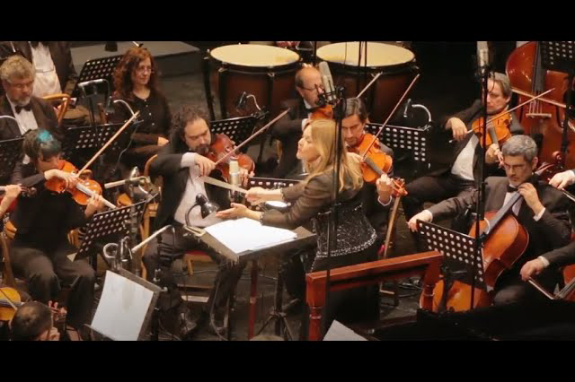

Desarrollo Web
Producción Audiovisual

Patricia Pouchulu en concierto
Didier Van Damme - Adagio à l'Europe 1970
"European Union's Theme"
Adagio to Europe
Teatro Avenida.
Conductor: Patricia Pouchulu
Orquesta: Estable del Teatro Colón